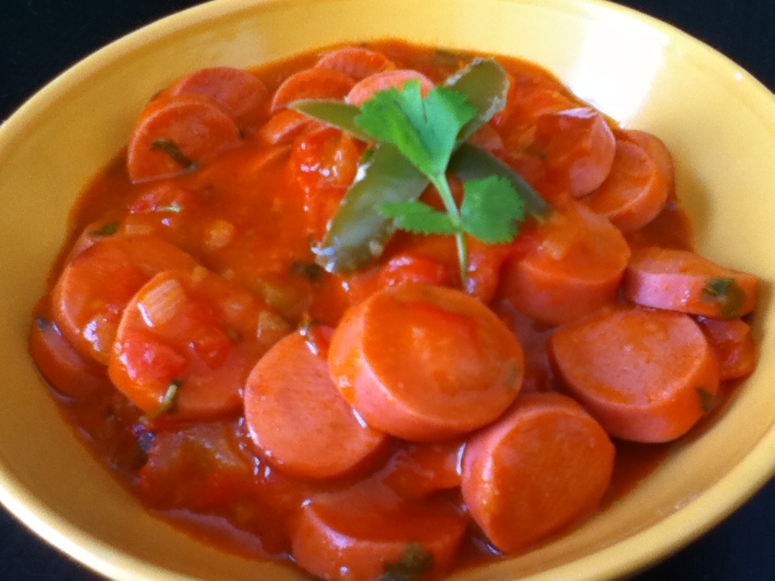

Tomatada
1 chile verde
5 tomates
4 salchichas
una pizca de sal
aceite
preparación:
cortar las salchichas en trozos
en un sarten poner un poco de aceite y sofreir las salsichas hasta dorar
luego picar la cebolla,tomates y chile agegar al sarten hasta sofreir
añadir sal al gusto
retirar del fuego y reservar
Se debe estar atento para añadir más agua según sea necesario
cuando el arroz esté lo suficientemente suave, se incorpora la leche y la mitad del azúcar
se continúa ajustando el agua según sea necesario y, al alcanzar una consistencia casi sólida, se añade la leche restante y el azúcar restante
se retira la preparación del fuego cuando tenga una consistencia espesa y se coloca en platos
opcionalmente se espolvorea canela molida encima